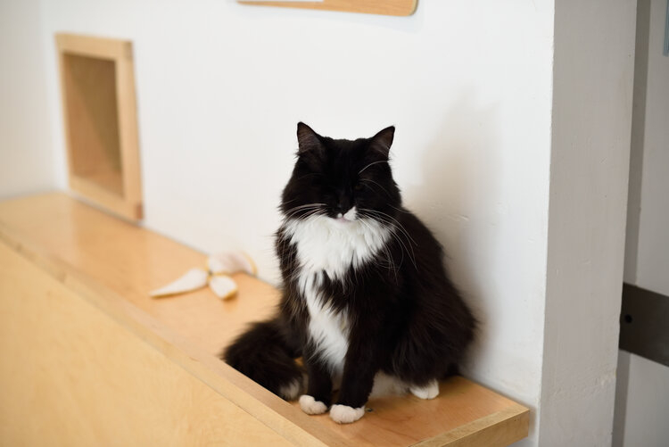

Adoptable Cats
The cats shown below are all currently adoptable, but their status can change quickly from "single and looking" to "in a serious relationship."
Feel free to email support@kitteasf.com or call us at (415) 325-5510 to confirm a certain kitten is still available for adoption. You MUST meet the cat(s) in person before being considered as their forever home. By booking a reservation in our cat lounge, you will get to know the cat/kitten before making any forever decisions, which will overall benefit both you and the cat(s) you are considering to adopt.
Steps to Adopt:
- Meet the cat(s)/kitten(s) in our cat lounge.
- Email support@kitteasf.com or speak to your host at the end of your visit to request an application.
- Fill out the application in full and send back to support@kitteasf.com to be considered. We will get back to you within 48 hours (unless the application was sent over the weekend, as this may take a bit longer to receive a reply).
- If your application is approved, you will receive an email from us with the good news! From there, we will have you pay via credit card through a secured payment link and have you sign our adoption agreements.
- You choose the day and time during KitTea business hours to pick-up and take home your new best fur friend (BFF).
Spud
Purrthday:
Sometime in 2012
Purrsonality Traits:
A big-headed cutie. He is very affectionate and loves to play (sometimes with hands!).
Siblings/Bonds:
None
Past:
We do not know much about Spud's past, but we do know that he loves his forehead scratched.
Fun Fact:
Spud is one of the oldest cats currently at KitTea, but he is still very active!
Notes:
Spud and your local wildlife will be safest if he is an indoor kitty only.
Harold
Purrthday:
June 1st, 2019
Purrsonality Traits:
Harold is a vocal, curious and loving boy.
Siblings/Bonds:
Maude
Past:
Previously in the care of an owner, Harold was surrendered with his sister Maude before arriving at KitTea. They are well socialized with people and do fairly well with other cats. They spend their free time cuddling with one another, chasing down feather toys and yowling for pets.
Fun Fact:
Harold loves to be scratched behind his left ear!
Notes:
Harold and your local wildlife will be safest if he is an indoor kitty only.
Maude
Purrthday:
June 1st, 2019
Purrsonality Traits:
Maude is a tiny sweetheart who loves to be held and loves to play!
Siblings/Bonds:
Harold
Past:
Previously in the care of an owner, Maude was surrendered with her brother Harold before arriving at KitTea. They are well socialized with people and do fairly well with other cats. They spend their free time cuddling with one another, chasing down feather toys and yowling for pets.
Fun Fact:
Maude is known to hoard and hide cat toys, especially noise-making ones!
Notes:
Maude and your local wildlife will be safest if she is an indoor kitty only.
Scout
Purrthday:
December 2020
Siblings/Bonds:
None
Purrsonality Traits:
Scout is an adventurous boy who is known for getting into mischief!
Past:
Scout came from a big litter, and his previous home was unable to take care of so many.
Fun Fact:
Scout doesn't mind getting dressed up in costumes, and will gladly let you put his signature bandana around his neck.
Notes:
Scout and your local wildlife will be safest if he is an indoor kitty only.
Blankie
Purrthday:
April 23rd, 2019
Siblings/Bonds:
None
Purrsonality Traits:
Blankie came to us nameless, and was instead named after his affinity for blankets! He is a very cuddly and friendly cat, and very patient with children. He is still leaning to socialize with other cats.
Past:
Not much is known about Blankie's past, but he was brought to KitTea to help him learn to socialize with other cats.
Fun Fact:
Blankie's blanket has been nicknamed "Blankie Jr." by staff.
Notes:
Blankie prefers to be inside, but can be an outside cat as well. We do not reccomend bringing Blankie into a home with another cat.
Purrmanent Residents
At KitTea, we care for rescue cats of all ages and backgrounds. Many of the cats you'll meet during your visit are purrmanent residents, which means they've hit the kitty jackpot and get to be spoiled and pampered by our caring staff for basically the rest of their nine lives. In turn, our resident cats help mentor and acclimate the many new adoptable kitties that come in, and entertain and socialize with our guests and visitors. These cats are not currently available for adoption, however, we always want to be sure the cats we keep are living their best and happiest lives, so in special cases, we may reach out and adopt out residents if we truly believe it is what is best for them.
Ron (aka "The Dude")
Purrthday:
July 2016
Sibling:
Ginny
Purrsonality Traits:
Sweet as pie, cuddly, a ham, wants to move to the Bahamas
Hobbies:
Food, racing mindlessly on the cat wheel, laying on backs and acting as a 14-pound scarf... and food
Bio:
Ron is quite the purrsonality. A simple man of the world, he just wants everyone to get along and have a good time. He becomes fast friends with every human and cat he meets, and is always down for a good chin scratch or grooming session with his ginger sister, Ginny.
Fun Fact:
Ron studied at Hogwarts School of Witchcraft and Wizardry with his best friend, Harry Paw-ter, and his pet rat Scabbers.
His Past:
We don't have any clear facts about Ron and his sister Ginny's past, but we do know they were once part of a feral cat colony. Perhaps he lived in Northbeach Commune with the beat poets?
Ginny
Purrthday:
July 2016
Sibling:
Ron
Purrsonality Traits:
Sweet, chatty, athletic, loving, shoulder jumper, escape artist
Hobbies:
Napping, listening to NPR, staying up-to-date on purrent events and making sure all her fellow felines are caught up as well
Bio:
Ginny is a rare kitty, as only around 18% of orange tabbies are ladies! She's a real gem to her best friend and laid-back brother Ron — you can frequently find them snuggling when they think no one is looking.
Fun Fact:
Ginny is actually a lioness in disguise. Watch out for her ferocious love bites — sometimes she forgets her own strength!
Her Past:
Not much is known about Ginny and Ron's past lives, although we do know they were part of a feral colony before arriving at the shelter. This is why her right ear is clipped; it allowed rescuers to know she had already been captured, spayed, and released back to her outdoor home.
Burger
Purrthday:
June 2016
Best Pal:
Everyone!
Purrsonality Traits:
Playful, adventurous, gregarious, a friend to all, confident, dog person, curious
Hobbies: Hunting, tricks for treats, watching mewvies with his fur-riends, running across the Golden Gate Wheel, styling his tail into an intimidating punk-style scorpion tail, gently nibbling on a curious finger or two
Bio:
Burger is a handsome gentleman in his tuxedo. He's energetic, loves to zoomaround, and is always down to play with any fellow cat. In his meowr mellow moments, he adores receiving belly rubs while reclining in one of his favorite nap spots.
Fun Fact:
Burger speaks three languages — Calico, Tabby, and Gaelic.
His Past:
It's a mystery. How did such an all-around good guy end up in the city shelter system? Tuxedos are some of the least adopted cats in San Francisco, so we're happy to keep his dapper self safe and happy here at KitTea!
Blinx

Purrthday:
June 2016
Best Pal:
Your hair
Purrsonality Traits:
Feisty, cuddly, goofy, endearing, bossy, kissing bandit, spontaneous
Hobbies:
Cruising the cat lounge, napping, roughhousing, snuggling, styling hair
Bio:
Don't let this gal's lack of an eyeball fool you. Well adjusted to the world around her, she's our feistiest feline. Blinx can play for hours, and if you're lucky you might get one of her famous love bites!
Fun Fact:
Blinx is all paws, claws, and zero flaws.
Her Past:
Blinx was turned in as a little baby and had to have eye surgery upon arrival at the shelter.She may have had a sick mama, which is why she was born with eye damage. She is originally from Stockton.